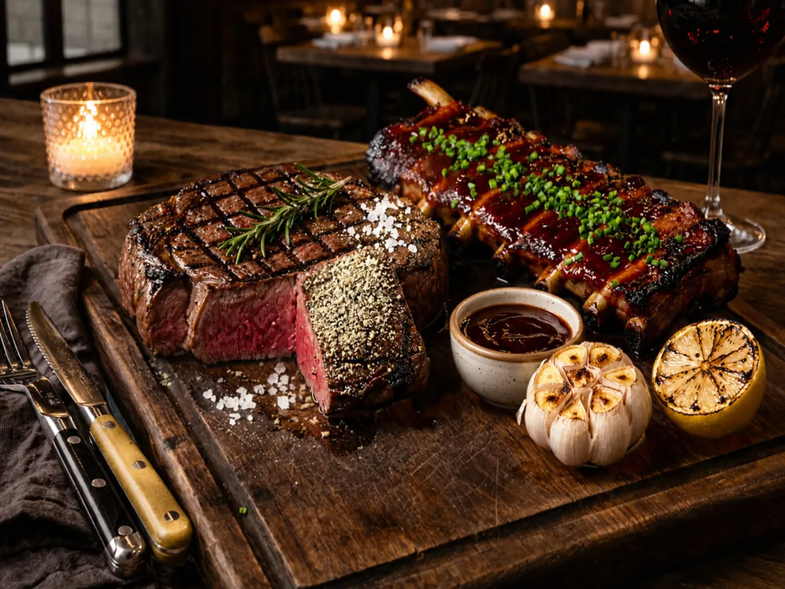

Steak, spareribs en burgers in Nijmegen
Bijgewerkt op 24 november 2026.
Soms wil je gewoon vlees. Een steak van de grill, spareribs die van het bot vallen of een burger waar je twee handen voor nodig hebt. In Nijmegen zitten de steakhouses vooral rond het Kelfkensbos en de Hertogstraat. Wij zetten ze op een rij, net als de ribs-zaken en de burgerrestaurants.

Zo hebben we gekozen
We lazen in november 2026 de websites en menukaarten van de restaurants in onze bedrijvengids. We kozen zaken die vlees echt centraal zetten. Prijzen komen van de kaart zoals die in november 2026 online stond.
Een goede steak
Frank's Food & Grill: steaks sinds 1993
Frank's zit al sinds 1993 in de Hertogstraat en noemt zich niet voor niets "Best steaks in town". Op de kaart staan onder meer Japanse wagyu flanksteak, ossenhaas, rib-eye van graangevoerd Australisch rund en een Noord-Amerikaanse T-bone van 600 gram. Bekend is ook hun creamed spinach als bijgerecht.
Het restaurant heeft plek voor 70 gasten en in de zomer een terras. Let op: op maandag en dinsdag is het gesloten, en voor grote groepen kun je niet reserveren.
Goed voor: een klassiek steakdiner in de binnenstad.
Vlees & Co: steakhouse aan het Kelfkensbos
Vlees & Co heeft vestigingen in Nijmegen, Arnhem, Amsterdam en Eindhoven. Ze letten naast smaak op duurzaamheid, dierenwelzijn en waar het vlees vandaan komt. Hun motto: eet je vlees, eet dan het beste.
Vlees & Co is partner van de World Steak Challenge, de jaarlijkse verkiezing van de beste steaks ter wereld.
Goed voor: wie wil weten wat er op het bord ligt.
Loetje: biefstuk met jus aan de Waalhaven
Loetje staat in heel Nederland bekend om de biefstuk met een royale hoeveelheid jus, vers witbrood en friet. In Nijmegen zit Loetje aan de Handelskade in de Waalhaven. Je kunt er ook lunchen, en er zijn vis- en vegetarische gerechten.
Met de auto parkeer je in P2 Oude Stad, op twee minuten lopen.
Goed voor: een ongedwongen biefstuk, ook als lunch.
Ook aan het Kelfkensbos: Meet & Ribs. En bij Bistro de Bok (In de Betouwstraat 14) staan naast vlees ook wildgerechten op de kaart.
Spareribs
Van Dam BBQ Ribs & More: familiebedrijf sinds 1986
Van Dam aan de Berg en Dalseweg is sinds 1986 een familiebedrijf, inmiddels met de derde generatie in de zaak. Sinds 2019 grillen ze op een KOPA-houtskool-BBQ en kun je er ook eten: binnen is plek voor 30 gasten, buiten voor 20.
Spareribs kosten 17 euro (normaal) of 23,50 euro (groot), met een marinade naar keuze: van zoet tot extra heet, of de knoflookmarinade "Mystery". Op de kaart staan ook rib-eye en tomahawk.
Goed voor: spareribs afhalen of ter plekke eten.
Liever laten bezorgen? Spare Rib Express aan de Roggeweg is een bezorgzaak voor spareribs.
Burgers
Wally: burgers van biologisch vlees
Wally in de Hertogstraat doet één ding en doet dat goed: burgers. Het vlees is biologisch, de briochebroodjes komen uit de eigen bakkerij en er zijn vegetarische burgers naar eigen recept. Elk seizoen is er een wisselende "ereburger", zoals nu met Groesbeekse pompoen.
Open van maandag tot donderdag vanaf 17.00 uur, in het weekend vanaf 15.00 uur.
Goed voor: een burger met lokale producten.
Smokehouse de Kronenburger: burgers op je eigen feest
De Kronenburger maakt al jaren zelf hamburgers en komt met een keukenwagen naar jouw feest. Op de kaart staan bijzondere burgers, zoals een zalmburger, een zeewierburger en zelfs een krekelburger. Ook pulled pork en spareribs kunnen.
Goed voor: een verjaardag of jubileum met burgers van de grill.
Burgers laten bezorgen
burgerme aan de Regulierstraat bezorgt zeven dagen per week, binnen 35 minuten na je bestelling. Je stelt je burger zelf samen. Johnny's Burgers, een keten met meer dan 50 vestigingen, zit aan de Waalkade en in de Smetiusstraat met de smash burger als bestseller.
Meer adressen
- Johnny's Burgers & O'Tacos in de Smetiusstraat.
- Fat Phill's, een drive-thru aan de Rietgraaf in Oosterhout.
- Grand Café de Waterwolf aan de Waalkade, met burgers op de kaart.
Liever een snelle hap? Kijk in onze gids voor snackbars en friet. Of zoek je een restaurant voor een groep? Bekijk de beste restaurants in het centrum.
Veelgestelde vragen
Wat is het beste steakhouse in Nijmegen?
Dat hangt af van wat je zoekt. Frank's Food & Grill is het oudste steakhouse (sinds 1993) en heeft een grote steakkaart. Vlees & Co let sterk op herkomst. Loetje is bekend om de biefstuk met jus.
Waar eet je spareribs in Nijmegen?
Bij Van Dam BBQ Ribs & More aan de Berg en Dalseweg, van de houtskool. Een normale portie kost 17 euro. Spare Rib Express bezorgt spareribs.
Waar kun je in Nijmegen burgers laten bezorgen?
burgerme bezorgt zeven dagen per week vanaf de Regulierstraat. Johnny's Burgers bezorgt ook, en Wally kun je via Thuisbezorgd of telefonisch bestellen.
Zijn er vegetarische burgers in Nijmegen?
Ja. Wally maakt vegetarische burgers naar eigen recept, en Smokehouse de Kronenburger heeft onder meer een zeewierburger.